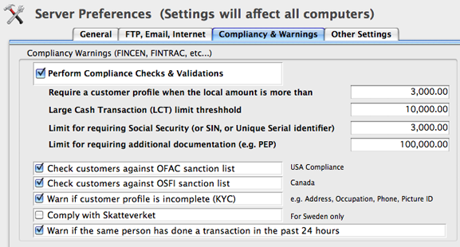
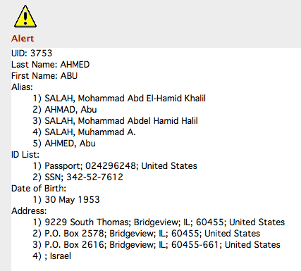

The competitive world of foreign exchange business and new regulatory environment, have created an increasing pressure on MSB and exchange bureaus to conform to new government and banking regulations to deploy automated record keeping software systems.
CurrencyXchanger was designed with the help of industry specialists with robust features to meet all these challenges, and enable foreign exchange companies like yours to become compliant with such regulations. If you are new to this business or would like to learn about the regulations, feel free to contact us and we will guide you in the right direction.
If you are not aware of it, there has been an increasing trend about banks, credit unions and other financial institutions closing down the operating accounts of MSB (Money Service Businesses). This phenomenon is more prevalent in the US and Canada, but have been followed in other countries too.
The general impression is that banks are trying to kill their competition by eliminating their ability to bank. This may seem like a valid incentive, but it is not the real reason behind their decision. The reason boils down to risk-management and control for their own AML compliance. MSBs are inherently risky clients in terms of being target of money launderer and terrorist financiers. However, there are more than one factor or two that determine the risk score of an MSB. Banks have to go through a very sophisticated a thorough process of risk-assessment to evaluate the capacity of an MSB in terms of fighting money laundering and terrorist financing.
Some banks have a slightly different risk assessment matrix but they all share some common properties. These are some of the issues that could influence the bank's decision one way or another:
CurrencyXchanger has provisions for AML compliance that can be configured for different countries based on the local laws. The preference setting allows different thresholds to be set for different transactions. Furthermore, the managers can configure the software to stop the user from continuing a transaction or simply allowing them to continue.
CurrencyXchanger 3.445 and higher can automatically cross-reference the name of all entities recorded in the system against the consolidated list of names and entities blacklisted under subsection 83.05(1) of the Criminal Code or the United Nations Suppression of Terrorism Regulations (OSFI) as well as the OFAC' SDN list. If a match is found against any of the sanctioned lists, a dialog box will pop up to display the origin of the match. The system will automatically block the transaction until proper due diligence is complete by the teller or the person recording the transaction. The system will warn the user several times before the transaction can be completed.
Yes. You can use the system without internet access. However, we do not recommend using a system that you business depends on it without having the capacity to request online support and troubleshooting.